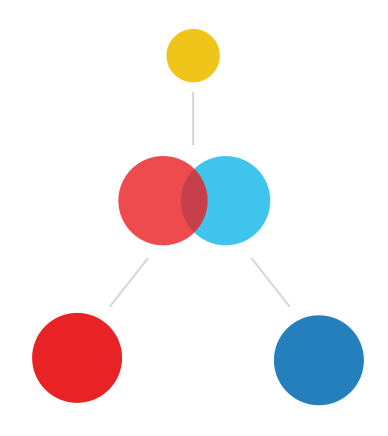

FISSION.JS
The Reactjs Toolkit
‹
Easy to use
Fission lets you focus on the app, not worry about designing the core system behind it.
Efficient
Fission uses React for extremely efficient rendering, with the best parts of Ampersandjs, model and state.
Customizable API
Fully modifiable API enables swapping out of core elements, such as Sync, for a mulit-service application
Open Source
Fission is, and will always be Fully Open Source.